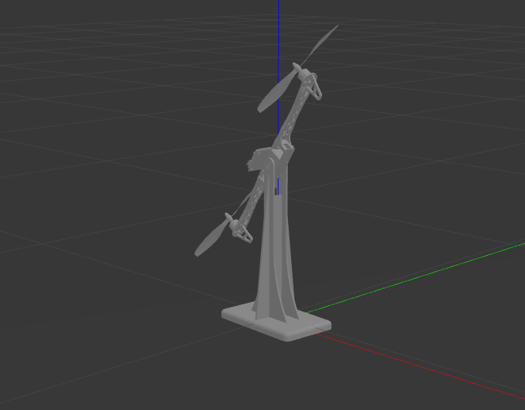
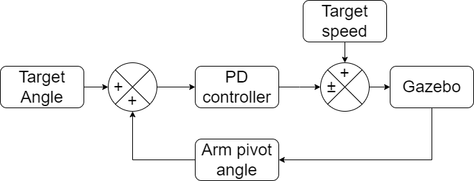
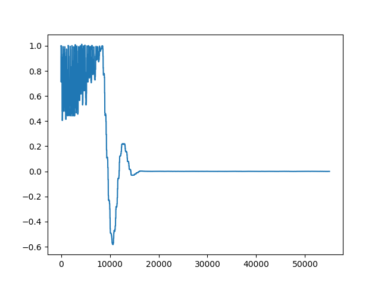

Google Summer of Code 2023 Report
Hej, I’m Damodar, and let me explain my project for the OSAVC in the organisation OSPO. The project was about using AirSim’s unreal engine for generating realistic scenarios and testing them. My mentor, Carlos, and I decided to simulate a balancing bot with propellers for the summer. However, we couldn’t use the unreal engine for the simulation in the end as we faced many issues. In the end, we decided to use the Gazebo simulator. (As it was much easier to work with 😅)

Some simulators for testing robotics algorithms use unreal, like CARLA and AirSim. However, these simulators only work with a specific robot. With OSAVC in mind, we decided to use the unreal engine for different robots. Simulink with the unreal engine is one of the approaches used for different kinds of robots without being fixed on the type of robot to be used like other simulators. The general workflow for using Simulink with the unreal engine is writing the control logic(generating actions, i.e., moving the robot) in Simulink and communicating it to the unreal engine for generating the simulation(for observing the effect of the environment on the robot depending on the actions).
I tried the example code of moving the cycle given on the MathWorks website. There are 3 main steps in this cycle simulation: 1) Simulink block diagram, 2) C++ program for communication between Simulink and Unreal engine, and 3) Animation Blueprint in Unreal Engine. We must repeat these steps for every new robot and create blueprints depending on the interaction between different robot components. The workload here increases drastically as a robot’s number of components increases. Also, as a beginner open-source contributor, this is the hardest part of the summer project. The main hurdles here were the different documentation styles for various tools and programming languages for communication between these tools.
Understanding this exponential workload for every new robot, we changed the simulator to The Gazebo simulator (a popular simulator in the robotics community in the ease of use, but it lacks specular reflection, unlike the unreal engine). Here, the workflow was much simpler than the unreal engine, as the inter-component interaction was already defined in the CAD. There was no additional need to define animations like blueprints. Then, the robot CAD(3D model) was directly imported into the simulator, and the control could be applied.

Finally, we got the robot into the simulator and applied velocity to the propeller(motor velocity). Using the aerodynamics plugins and the physics engine of the gazebo simulator, we were to simulate the robot. To balance the arm of the robot, I designed a PD controller with the target arm angle as input and the motor velocity as the output. The code and intruction for this can be found here

I want to thank my mentors, Carlos Espinosa, Aaron Hunter and the organisation OSPO. Their support has made this program an incredible experience with lots of learning for me and made this a summer to remember for me.